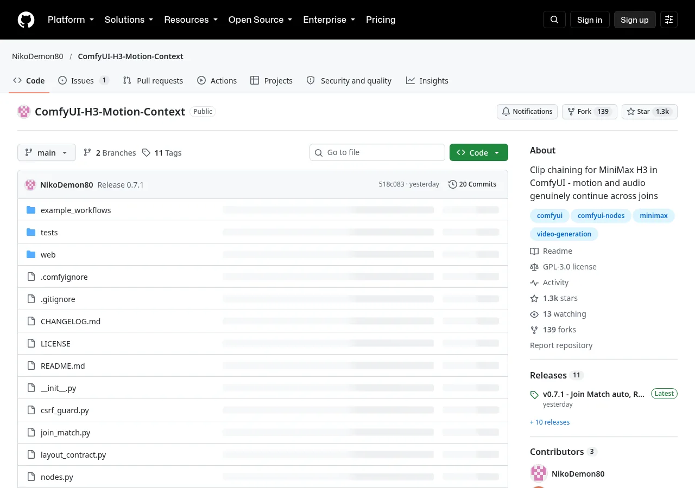

★ 1,275 stars 139 forks GPL-3.0 Python + JS v0.7.1 · 2026-10-18 ComfyUI ≥ 0.34.0
数据通过公开 GitHub API 获取，时间 2026-10-19 13:45（UTC+8）。仓库创建于 2026-08-07，共 11 个 release、20 个提交、3 位贡献者，最后一次推送在 2026-10-18 12:25（UTC+8）。

它解决什么问题
用 MiniMax H3 做短剧、MV 或长镜头，单次生成的长度不够用，只能一段一段拼。常见做法是把上一段的最后一帧当首帧，再做一次图生视频。问题在于一张静止图片不带运动信息：人物刚才往哪个方向走、走多快，模型只能猜，所以接缝处容易卡一下，或者动作突然变了。声音更麻烦，新一段的音轨往往只是“听起来像”，并不是同一段录音接着放下去。
按 README 的说法，ComfyUI 自带的 Add Guide for MiniMax H3 已经能在任意帧上锚定图片或短片。如果只需要锚帧，用自带节点就够了。这个包专门处理串接时还没人解决的两件事：
- 画面不再每接一次就过一遍像素。Add Guide 的输入是图片，所以每接一次都要解码、缩放、再编码，颜色漂移和画面变软就是这么累积出来的。本包直接从上一段的 latent 里切出尾部，钉住的帧在数值上和原来逐位相同。
- 声音是接着放，不是重新开始。Add Guide 锚定的音频从某一帧开始往后延伸。要真正接上一条音轨，钉住的窗口必须止于接缝，并向前覆盖已经播过的那段声音。
核心能力
Motion Context 主节点
把上一段末尾的 5、22、39 或 56 帧（推荐 22 帧，约 0.92 秒）钉在下一段开头，采样的每一步都不改动这些帧。
反向音频窗口
钉住的声音窗口止于接缝，向前回溯（推荐 18 帧），放在新片段自己的时间轴上，节拍不再错位，也不会再出现“翻唱乐队”式的相似音。
Trim 剪头
把新片段开头被钉住的帧连同对应声音一起剪掉，前后两段直接首尾拼接，不需要转场；match_tail 修正每段约 8ms 的音频取整误差。
Save / Load Latent
通过文件把上一段的音视频 latent 带到下一次运行，避开 ComfyUI 的循环连接限制，全程不经过像素。按 clip_00002.safetensors 这样的规则编号。
Chain 一键接龙
Run/Re-roll、Approve、Chain、Reset、Clear latents 五个按钮；segments 设定连续生成几段，设为 0 就一直生成，直到点 Stop。
布局自检
不修改 ComfyUI，也不改磁盘上的任何文件。首次渲染前会对照当前运行的 ComfyUI 代码校验锚点算法，一旦假设不成立就拒绝运行，并说明哪里变了。
接缝测量
Seam Probe 节点和三个命令行脚本，分别测时序（是真续接还是相似音）、响度/底噪是否跳变、画面是否冻结。
抑制漂移（实验）
v0.7 新增 Refine Blend（一步精修后混入）、Join Match（消除接缝处亮度、对比度和细节的跳变）、Sigmas Tail（减轻最后一步过度锐化）。
工作原理
已生成，latent 存盘
+ 末尾声音
采样时保持不变
B 的头 22 帧
直接首尾拼接
示意：钉住的帧是“真实的运动”，模型不用从一张截图去猜方向和速度。
按 README 的解释，关键不在“喂什么”，而在时间坐标。早期版本把钉住的音频当作 reference 送进去，模型就把它理解成“另一段听起来像这样的片段”，结果接缝处总有一下“咔哒”，像节拍短暂地快了、错拍了。作者用互相关对比每段开头和上一段结尾，发现两边乐器一样、律动一样，却从来不是同一段录音。修正办法和视频一样：模型看到的数据行内容不变，只是把钉住的音频放到新片段自己的时间轴上，并让它与钉住的视频在同一时刻结束。这样，时间坐标表达的就是“本片段更早的部分”，而不再是“另一个片段”。
MiniMaxH3ImageToVideo / MiniMaxH3ReferenceToVideo（或 t2v 路径）
-> H3 Motion Context <- 上一段的 latent（画面 + 声音）
-> guider / sampler
...
解码得到的 IMAGE + AUDIO
-> H3 Motion Context Trim <- 接入 trim_frames
-> Create Video / 保存
本次运行：SamplerCustomAdvanced -> H3 Motion Context Save Latent
下次运行：H3 Motion Context Load Latent -> context_latent快速上手
1. 安装：要求 ComfyUI 0.34.0 或更新版本（旧版请用本包 v0.3.1）。把仓库放进 custom_nodes，然后重启 ComfyUI。也可以通过 ComfyUI Manager 安装（发布者 ID 为 nikodemon80）。注意只装一份，改过文件夹名的备份同样会被加载。
cd ComfyUI/custom_nodes
git clone https://github.com/NikoDemon80/ComfyUI-H3-Motion-Context
# 重启 ComfyUI，启动日志应出现：
# h3_motion_context: nodes registered. ComfyUI is not modified; ...2. 载入示例工作流：example_workflows/H3-Motion-Context-v0.7.json（Ref2VA 参考生视频路径），附带角色参考图 character.png、示例提示词和写 Ref2VA 提示词用的系统提示词。所有新节点都已按推荐参数接好。
3. 推荐配置（README 里所有“能用”指的都是这一套）：
context_length 22 # 约 0.92 秒画面
audio_context_length 18 # 3 的倍数可正好落在 40 Hz 音频网格上
context_latent 经 Save/Load Latent 接入
Trim 画面与声音都接上，match_tail 打开
Spectrum 关闭（Turbo LoRA 同样会损失音质）4. 生成：第一段设为 Load 0 / Save 1，点 Chain 节点上的 Run/Re-roll；结果满意就点 Approve（索引变为 1/2 并生成下一段），或者设好 segments 后点 Chain 自动接龙。不要用 ComfyUI 的 run on change 来推进链条。
5. 自测（不需要 ComfyUI，也不需要 GPU）：
python tests/_mock_harness.py
python tests/_node_smoke_test.py
python tests/seam_probe.py A.flac B_untrimmed.flac
python tests/level_step.py clip*.flac
python tests/freeze_detect.py clip*.mp4示例素材
example_workflows/character.png（已压缩）示例工作流共有 7 个分组：Model Loading、Character Reference、Prompting、Motion Context、Sampling、Full Motion Context、Decode & View。节点包括 MiniMaxH3ReferenceToVideo、本包的 7 个节点，以及若干第三方节点（如 VedaSparseAttention、ResolutionSelectorLive、VideoOasisPreview），所以载入后可能需要另外安装缺失的节点。
README 的提示词章节来自作者的一次实测：用本包串接 16 段，生成了一集 4 分 34 秒的多机位情景喜剧，分辨率 736×576，显卡 5070 Ti，耗时约两小时。同一批数据中，只续接画面时接缝响度跳变的中位数是 0.905，连同音频一起续接后降到 0.16。
项目结构
| 文件 | 作用 |
|---|---|
nodes.py | 核心节点：Motion Context、Trim、Save/Load Latent、Chain（约 60KB） |
layout_contract.py | 首次渲染前校验 ComfyUI H3 布局，不做任何修改 |
probe_node.py | Seam Probe：在工作流内部测量接缝 |
refine_blend.py / join_match.py / sigma_tools.py | v0.7 的三个实验性抗漂移节点 |
csrf_guard.py | 确认对 Chain 路由的请求来自 ComfyUI 自己的页面 |
web/h3_motion_context.js | Chain 按钮，以及让 Load/Save/Refine Blend 的索引保持同步 |
tests/ | 6 个脚本：3 个依赖 numpy 的单元/冒烟测试，3 个测量脚本 |
example_workflows/ | v0.7 示例工作流 + 角色参考图 |
CHANGELOG.md | 各版本变更，以及适配哪一版 ComfyUI H3 布局 |
局限与注意
- 链条越长，质量越差，音频尤其明显。每一段都由上一段的输出生成，像复印件再复印，高频最先丢失。节拍能保持住，但几段之后声音会发闷。画面要稳得多。
- H3 输出的音频是 32 kHz，不是 48 kHz。如果拼接脚本里写死了 48000，长片尾部可能悄无声息地变成静音。
- Turbo LoRA 和 Spectrum 这类跳步优化都会损失音质，同时用影响会叠加。用本包时建议关掉 Spectrum。
- 链条中途不能改分辨率（latent 无法缩放，节点会拒绝运行）。
- 写提示词要下功夫：模型会把相互矛盾的描述“全都画出来”。建议用“气闸”写法：下一段先保持上一段的收尾构图约两秒，不加台词，但要有呼吸、重心转移之类的小动作，再切到新剧情。
- 测试面窄：作者只在一台 Windows 机器上、用一种分辨率和一个采样器验证过，听感结论来自他一个人的渲染结果。
- 许可：代码为 GPL-3.0。README 提醒，据称 H3 社区许可目前不覆盖欧盟、英国、韩国和美国，商用前请自行核实。
- 节点的 widget 改过。旧工作流载入后数值可能错位，需要删掉节点重新添加、重新连线。
适合谁
- 用 ComfyUI + MiniMax H3 做短剧、MV、长镜头，需要超过 15 秒连续画面的创作者；
- 对音画同步、节拍连续性要求高的音乐类内容（README 的验证素材正是节奏密集的电子乐和人声朗读）；
- 想研究“视频模型续写”原理的开发者：代码里有完整的布局校验和接缝测量工具，可以直接拿来做实验。
对我们的启发
- 续写要给模型真实的运动，不能只给一张图。不只是视频，凡是要“接着生成”的场景（音频、长文、动作序列），重叠一段真实上下文都比只给最后一个状态可靠。
- 别在压缩空间外来回转换。保持在 latent 里操作，省掉解码再编码的往返，长链路上的漂移会少很多。这个思路适用于任何多轮生成管线。
- 宁可出错时停下来，也不要悄悄输出坏结果。依赖上游的内部实现时，先用契约测试做自检，不成立就拒绝运行并报出原因。这比事后排查一段坏渲染便宜得多。
- 用数字评估接缝。用互相关、响度跳变、冻结检测把“听起来像”和“真的接上了”区分开，作者也明确说“数字比夸奖更有用”。
- 提示词也要接得上。技术把运动带过了接缝，剧情怎么接仍然靠写法：先描述上一段怎么结束的，再写新的内容。
推荐者怎么说
有朋友问：MiniMax H3 一次最多生成 15 秒，做短剧的话，段和段之间怎么接才不突兀？
我推荐用 ComfyUI-H3-Motion-Context 的方案，项目中有直接可用的工作流示例。
常见做法是拿上一段的最后一帧去做图生视频。问题是一张静态图里没有运动信息，模型只能猜：人刚才往哪走、多快，全靠猜，所以接缝处经常卡一下或者动作突变。
Motion Context 的做法是：把上一段最后 22 帧（0.92 秒）原样钉在下一段开头，每一步采样都不动它们。模型看到的是真实的运动，不用从一张图去猜。
画面和声音都是直接从上一段的 latent 里切出来的，不用先解码成视频再编码回去，所以不会每接一次就损失一点画质。
生成完，用 Trim 节点把开头这 22 帧剪掉，两段直接首尾拼接，不需要做转场。我逐帧看了接缝前后，角色的姿势、位置、表情都对得上。
最关键的是提示词：下一段开头要先描述上一段是怎么结束的。同一个角色、同样的景别、同样的动作，保持一两秒，再写新的剧情。
项目地址：github.com/NikoDemon80/ComfyUI-H3-Motion-Context
我不说的话，谁能看出这30s的功夫熊猫是两段生成的？
同一条串里，作者回复别人时说，这个方案刚出来时他就分享过，也早就记在了自己的群文档里。（他在回复里把它称作“lora”，但它实际上是一个 ComfyUI 自定义节点包，不是 LoRA 模型。）帖子里的 22 帧 / 0.92 秒、latent 直切、Trim 拼接和提示词建议，README 中都有对应原文。
相关页面
- MiniMax H3 Director 工作流：ComfyUI 里 5 种 H3 音视频玩法：涵盖 FL2V 首尾帧、V2V 分段修改等其他 H3 工作流
- MiniMax-H3 Prompt Rewriter for ComfyUI：把一句话扩写成 H3 分镜脚本，可以配合本页的“气闸”写法
附录：README 中文全译
译自仓库 README.md（main 分支，v0.7.1，2026-10-19 获取）。原作者 NikoDemon80，许可 GPL-3.0。译文保留原有结构，代码和日志保持原样。
H3 Motion Context
把 MiniMax H3 的片段串起来，让运动和声音跨过剪切点继续下去。
生成片段 A，把它的最后几帧和音频送进这个节点，再生成片段 B。B 会从 A 停下的地方接着走：同样的运动、同样的速度、同样的方向，声音也是同一段继续放下去，而不是一段听起来相似的新录音。可以无限重复。
磁盘上的东西不会被修改，ComfyUI 本身也不会被修改。首次渲染前，节点会对照当前运行的 ComfyUI 代码检查自己的计算；如果某次更新打破了某个前提，节点会拒绝运行，并说明哪里变了。大声失败，好过一段你没注意到的坏渲染。
需要 ComfyUI 0.34.0 或更新版本，H3 从这一版起支持任意关键帧锚点。本包 0.3.1 版可在这一版及所有更旧的版本上运行，见 CHANGELOG.md。
为什么要做这个
ComfyUI 可以用 Add Guide for MiniMax H3 节点，把一张静图或一段短片锚定到 H3 生成中的任意一帧。如果你只需要这个，用它就行，不需要本包。
串接是另一个问题，其中有两部分至今没有别的方案解决。
画面每接一次就要出到像素再回来。Add Guide 接收图像并对其编码。用它串接，每个接缝都要付出一次解码、一次缩放、一次重新编码。长链条上的颜色漂移和画面变软，就出在这个往返上。本包直接从上一段的 latent 里切出尾部，所以钉住的帧数值不变，逐位相同。
声音是重新开始，而不是继续。Add Guide 锚定的音频从某一帧开始向后延伸。要真正延续一条音轨，钉住的窗口必须止于接缝，并向前回溯到已经播过的声音。这就是“模型继续你的音轨”和“模型写一段听起来像它的东西”之间的区别；只要素材有节拍，你立刻就能听出来。
其余的一切都从这两点推出来：从交付片段中去掉钉住头部的 Trim 节点；不碰像素、把片段带过去的 Save/Load Latent 一对节点；以及测量接缝究竟是真续接还是逼真模仿的 Seam Probe。
音频是更难的一半，也是更有用的一半，因为 H3 是同时生成画面和声音的。想知道怎么做到的，见下文“为什么音频要下功夫”。
安装
把文件夹放进 ComfyUI/custom_nodes/ 并重启。启动时你只会看到：
h3_motion_context: nodes registered. ComfyUI is not modified; the layout
checks run on the first use of a Motion Context node.装了这个包，对你其他的 H3 工作流毫无影响；在你真正串接片段之前什么都不会运行。第一次串接时你会看到：
h3_motion_context: ComfyUI H3 layout checks passed, anchors and pinned audio will land where intended如果不是这条，节点就拒绝运行，原因会写进日志。
在 ComfyUI 0.33.4 或更旧版本上，节点会如实告知，并指引你使用可同时运行于两者的 0.3.1 版。这是从布局代码本身读出来的，而不是看版本号，所以 nightly 版或分叉也能得到正确答案。
接线
MiniMaxH3ImageToVideo / MiniMaxH3ReferenceToVideo (or the t2v path)
-> H3 Motion Context <- previous clip's latent (picture + sound)
-> guider / sampler
...
decoded IMAGE + AUDIO
-> H3 Motion Context Trim <- wire trim_frames across
-> Create Video / save把 trim_frames 接到 Trim 节点。钉住的帧会出现在新片段的开头，拼接前必须去掉，画面和声音一起去掉。
把上一段带过来
上一段以 latent 的形式进入节点，但你不能把采样器直接接到 context_latent。ComfyUI 会报循环连接，而且它说得对：你要的 latent 来自上一次运行，而不是这一次。两个辅助节点像你的帧和音频那样，经由文件把它带到下一次运行：
this run: SamplerCustomAdvanced -> H3 Motion Context Save Latent
next run: H3 Motion Context Load Latent -> context_latent两者都有 clip_index，数字就是字面意思。在 Load 上，是你从哪段继续；在 Save 上，是这一段本身是第几段。第一段：Load 0、Save 1。用第 1 段生成第 2 段：Load 1、Save 2。
Load 0 不读取任何文件。此时 Motion Context 会把传入的 conditioning 原样透传，并报告 trim_frames 为 0，所以第一段时可以让节点保持启用。不要静音它。
不要用队列的 run on change 来推进链条。每次索引变化都是一次独立的图编辑，两个 widget 同时递增会排两次队并跳过槽位。请用 H3 Motion Context Chain 代替 ComfyUI 的 Run 按钮。
只有当三者处于同一个 canvas group（你在节点周围画的那种彩色框）时，Chain 节点才能看到 Load 和 Save。如果没有分在一组，所有按钮都不起作用。选中 Load、Save 和 Chain，然后 Group Selected（或者把 Chain 拖进现有的 Motion Context 组）。
- Run/Re-roll 就是这个图的 Run 按钮。它按当前 Load/Save 索引排队，不推进索引。第一段：保持 Load 0 / Save 1 点它。不满意？再点一次，重试会覆盖该槽位。
- Approve 把两个索引各推进一格，然后为下一段排一次队。
- Chain 就是循环执行的 Approve。每完成一段，它就推进 Load/Save 并继续，所以你已经做好的 0/1 片段会变成 1/2，而不是重新抽一次。例外是 Load 0 / Save 1 且磁盘上还没有第 1 段：它会先生成第一段，再自动 Approve。segments 是这个循环跑几段：5 表示跑五段后停止，0 表示一直跑，直到你点 Stop。
- Reset 设为 Load 0 / Save 1。它不排队，也不删除文件。
- Clear latents 删除 Load 文件夹中带编号的链条槽位（
clip_00001.safetensors等）。你改过名的文件不受影响。索引保持不变。
文件按最直观的方式命名，clip_00002.safetensors 就是第 2 段。
自动保存的文件（Save 为 0 时）末尾带下划线（clip_00002_.safetensors），因为它们按运行次数编号而不是按片段编号，按索引加载时会特意跳过它们。
当 clip_index 大于 0 时，你也可以让加载器指向某个具体文件；此时加载该文件，忽略索引。索引 0 永远不读文件。latent 路径必须位于 ComfyUI 的 output 文件夹内。
默认情况下，加载器的输出只给 context_latent 用，不要接到解码节点上。如果你想要一个原生节点能接受的标准 H3 latent，打开 stock_format。原生的 Save/Load Latent 在这里不能用，它处理不了 H3 成对的视频/音频 latent。
latent 同时携带两路流，所以接上它之后完全不必加载上一段的视频。钉住的帧是直接从中切出来的，而不是解码成像素再编码回去，所以它们就是模型生成的原样，而非重建品。没有任何东西会让颜色或对比度偏移，因此看不到接缝，速度也更快。
这一切都无需设置。context_frames 保持不接即可。片段之间分辨率必须一致，因为 latent 无法缩放；如果不一致，节点会拒绝并报出两边的分辨率，而不是悄悄退回有损路径。
可移植的 latent
latent 文件也可以通过 ComfyUI 的 HTTP API 传递，供远程驱动 ComfyUI、并自行保存每一段副本的工具使用。
- Save 会像原生 Save Latent 那样在本次运行的 history 中报告其文件（
outputs.<node>.latents：filename、subfolder、type: "output"），客户端可用GET /view获取。 - Load 有一个可选的
folderwidget：output（默认，即上文的链条行为）或input。选input时，latent_path指定 ComfyUI input 文件夹中的一个文件，例如用POST /upload/image上传的文件。索引 0 仍然不加载任何东西；大于 0 时加载该文件。离开 input 文件夹的路径会被拒绝。
在 folder 出现之前保存的工作流加载后不变，继续从 output 读取。
对于没有 latent 的图，还有一条老路径：把上一段的帧接到 context_frames，解码后的音频接到 context_audio，H3 音频 VAE 接到 audio_vae。它能用，但每个接缝在两路流上都要付出一次有损往返，可见的接缝就来自这里。除非有理由，否则请用 latent。
参考模式
把本节点放在 MiniMaxH3ReferenceToVideo 之后，按上面的方式接线。你的参考块（图像、视频、带音频的视频、音频）完全不受影响：钉住的声音作为关键帧传入，而不是作为参考，所以两种机制不再共用同一个列表。
无需配置。之所以提一句，是因为 0.2.0 之前的版本会覆盖那个列表，于是打开串接就会悄悄丢掉你的参考；而直到 0.3.1，钉住的音频都是加进那个列表的。
参考仍会把目标时间线向后推，钉住的帧跟着走。这现在是 ComfyUI 自己的计算，而不是本包的。
与 Add Guide 并用
用 Add Guide for MiniMax H3 随意锚定，再把本节点放在它之后。两者都会保留：钉住的头部决定片段如何开始，guide 决定你放置的位置发生什么。带音频的 guide 保持自己的放置方式（从锚点帧向后），而钉住的声音保持其向前回溯的窗口。
锚在钉住头部之内的 guide 会被丢弃并给出警告，理由与 first_frame 锚点相同。
保留尾帧目标
照常在原生 conditioning 节点上接 last_frame，再把本节点放在它之后。该锚点会被保留，并与头部一起钉住：钉住的那段决定片段如何开始，你的图像决定它在哪里结束。它保持 ComfyUI 给的坐标，包括参考带来的偏移，所以无论图里还有什么，它都待在原位。
first_frame 锚点会被丢弃并给出警告。那些帧归钉住的头部所有，在同一时刻再钉一个内容不同的块会与之打架。旧版本会悄悄替换两个锚点，所以如果此前某个串接图带有尾帧目标，它从来没有到达模型。
设置
只有两个，因为其余每一项都只有一个正确答案。
context_length：从上一段画面带过来的帧数。可选 5、22、39 或 56。只有这些长度恰好是整数个 latent 步，所以不提供其他值。5 勉强算流畅，22 几乎无缝。更长的窗口钉住更多运动，但它们会从交付片段的开头被剪掉，所以 56 意味着每次渲染要花 2.3 秒生成你会扔掉的帧。用 22。
audio_context_length：要钉住的尾部音频帧数，独立于画面窗口。它与钉住的视频在同一时刻结束，所以这个值只控制声音向前回溯多远。0 表示跟随 context_length。用 18。更长的窗口让声音更贴近上一段，但每过一个接缝都会更闷一点、更轻一点；到 24 时几段之内就能听出来。更短的窗口保持音量、接缝干净，但音乐在段与段之间漂得更远。18 是目前在音乐链条上找到的最佳平衡。任何长度下都还有一些高频损失。任何 3 的倍数都恰好落在模型 40 Hz 的音频网格上（一帧等于 5/3 个音频步），所以窗口会按你要求的宽度精确钉住。不在网格上的值会被扩到最近的整数步。
其余全部固定：钉住的那段在一次 VAE 调用中完成编码，它位于片段头部、由 Trim 节点去掉，钉住的音频放在本片段自己的时间线上。其他备选方案存在的意义只是复现它们自己的失败，所以现在它们是 nodes.py 顶部的常量。如果你想看看它们做了什么，改那里即可。
Trim 节点上的 match_tail 仍是一个设置，因为那个节点不知道另一个节点做了什么。保持开启。H3 会把音频网格四舍五入到最近的步，所以每段都多出或少了约 8ms 的声音，而这个误差会在每个接缝处累积。
减少漂移（实验性）
长链条会漂移。脸会变得光滑或变老，细节会堆积，颜色和对比度在每个接缝处都会偏一点。三个实验性节点处理这个问题。它们减少漂移，但不能消除；效果取决于场景。它们的行为和默认值在后续版本中可能会改变。
- H3 Refine Blend 给每段一次轻量的二次处理，让它重新读取你的参考，而不只是复制上一段。钉住的帧严格保持采样结果，所以接缝保持闭合，精修版本在它们之后混入。把它放进与 Load、Save、Chain 相同的 canvas group；Chain 节点会让它保持同步。
- H3 Join Match 消除上一段最后几帧与本段最初新帧之间在亮度、对比度和细节上的小跳变。镜头和场景静止时效果最好。对运动镜头，它基本不动片段。
- H3 Sigmas Tail 重塑调度的最后几个噪声级，让最后一步少加一些额外锐度。可选；效果随场景变化比另外两个更大。
Join Match 默认 tuning: auto，它读取每一段，分辨固定机位与运动镜头，并替你选择设置。manual 则按 widget 的设定使用。
BasicScheduler -> H3 Sigmas Tail (optional) -> main sampler, sigmas
main sampler ─┬────────────────────────────────> Refine Blend (original)
└─> refine sampler, one step ────> Refine Blend (refined)
Refine Blend -> H3 Join Match -> Save Latent, VAE Decode, VAE Decode Audio
Motion Context trim_frames -> Join Match context_length
Load Latent -> Join Match context_latent精修采样器只走一步：在 BasicScheduler 的输出上（任何 Sigmas Tail 之前）做 Split Sigmas，8 步调度时取第 7 步，把其 low_sigmas 接入第二个采样器。给它普通的 Reference to Video conditioning，而不是 Motion Context 的输出，并给它自己的随机种子。
Save Latent 和两个解码都接 Join Match 的输出，这样你保留的视频与下一段继续所用的 latent 一致。
为链条写提示词
设置负责把运动和声音带过接缝。下一段发生什么取决于你，这里有几个陷阱。
模型会把矛盾渲染成并集。第 N 段以 A 的特写结束，第 N+1 段的提示词开头写“B 和 C 的双人镜头”，模型不会二选一，你会得到全部三个人。钉住的帧不是建议，所以描述另一种人物布局的提示词，会被理解为对它们的补充，而不是替换。
气闸。不要在同一时刻同时要求变化和延续。让第 N+1 段开头保持第 N 段完全相同的收尾构图，不加台词，约两秒，然后再切到新的布置。这样做的接缝测出来比普通的逐帧剪切还紧；跳过这一步的接缝，测出来像两个不同房间拼在一起。
让保持的那段有事可做。保持构图却什么都不发生，会渲染成真正的定格，两秒一动不动的演员看起来就像视频卡住了。写进一次呼吸、一次重心转移、一次视线变化。镜头不动，演员要动。tests/freeze_detect.py 能找出这类问题。
在时间码里预留钉住的头部。在 head 模式下，片段输出会比采样时短 context_length 帧。22 帧就是 0.92 秒。你提示词中的时间点对应的是采样版本，而它早开始 0.92 秒，所以你写在 4.0 秒的节拍，在文件里会出现在 3.08 秒。
为什么音频要下功夫
第一个版本把钉住的音频走 H3 的参考机制，那是音频条件通常走的地方。每个接缝都有一下轻微的“咔哒”，像音频短暂加速并错拍。看波形没发现问题，接缝两侧各自都很平滑。
把每段的开头与上一段的结尾做互相关（就是 tests/seam_probe.py），才看清实际情况：新片段的音频与旧片段相似。同样的乐器、同样的律动，却从来不是同一段录音。像一支翻唱乐队。模型把参考理解为“一段听起来像这样的独立片段”，这正是参考的用途，而对续接来说恰恰错了。
修正办法和视频那边已经奏效的一样。模型看到的数据行两种方式下完全相同，不同的是它们的时间坐标，而坐标正是表达“独立片段”还是“本片段更早部分”的东西。所以钉住的音频被放在新片段自己的时间线上，恰好与钉住的视频同时结束。时序锁定为一个不随接缝增长的固定偏移，“咔哒”消失了。
它还不是完美的延续。在 latent 中测量，模型仍会重新生成一部分钉住的声音，而不是全部原样带过去，链条中的高频损失就来自这里。节拍保持住了，接缝也不再听起来像拼接，但声音是一部分延续、一部分重画。
局限
沿着链条质量会下降。这是最大的问题，而且主要在音频。每段都由上一段的输出生成，而上一段又来自再上一段。损失像复印件再复印一样累积，在音频中最先丢的是高频。时序和速度保持锁定，但几段之后声音会变钝、变闷。画面保持得好得多。
每个接缝叠加两样东西：模型自身的平滑，以及一次出到像素再回来的往返。context_latent 为两路流都去掉了第二样。对画面来说，这是“看得见接缝”与“根本没有接缝”的区别。对声音有帮助，但模型自身的平滑依然存在。长链条值得仔细听，重新开始最好落在自然的音乐转折处。画面方面见上文“减少漂移（实验性）”。
一个很小的音频偏移，现在认为已修复。串接的片段过去会晚约 8ms。原因是算术：一帧等于 5/3 个音频步，所以除非钉住窗口的长度恰好是整数步，否则它会落在模型正在填充的步之间。现在窗口会吸附到网格上。这个偏移是恒定的，远低于口型同步误差能被察觉的水平，也不会沿链条增长，所以这是整理而不是抢救。想在自己的素材上核查，tests/seam_probe.py 会以毫秒报告延迟。
H3 输出 32 kHz 音频，不是 48 kHz。在任何重新封装或拼接的脚本里，都要从片段上读取采样率。流复制式拼接无法中途改采样率，所以写死 48000 会让长剧集的结尾悄悄变成空白，而每一项时长检查仍然通过。tests/level_step.py 会打印每段的采样率并标出不匹配。
Turbo LoRA 和 Spectrum 都会损失音频。Turbo LoRA 用很少的步数达到结果，而细节正是那最后几步的用途。它让声音变厚、画面变软。ComfyUI-Spectrum-MiniMax-H3 这类跳步优化器对音频也有同样影响，对画面影响较小，而且它们会错误预测那些永远不变的钉住行。两者一起用，影响叠加。如果链条听起来比预期更钝、更近，先试着关掉它们，再去怪串接。这些图请关闭 Spectrum。
使用 context_latent 时，分辨率不能在链条中途改变。latent 无法缩放，所以节点会拒绝。用新分辨率重新生成上一段，或在那里开一条新链。
为链条写提示词需要功夫，参考模式下尤其如此。每个参考都作用于整段；无法表达“这个从第二秒开始”。时序只能来自镜头结构和描述。见上文“为链条写提示词”。
测试范围窄。接缝验证过的素材有：节拍密集的电子音乐（时序误差最容易听出来），以及走 latent 路径的人声朗读（没有任何东西能掩盖接缝）。一台 Windows 机器、一种分辨率、一个采样器。数学部分每次启动自检。感知层面的结果是一个人的渲染。
ComfyUI 的 H3 支持还很年轻。本包不再给它打任何补丁，但仍依赖布局放置东西的方式，而其中一项依赖在上游没有测试：钉住的音频窗口用一个分数的、负数的锚点索引来定位。在布局中这是合法的算术，但没有任何原生节点能产生它，所以上游没有任何东西覆盖它。layout_contract.py 在首次渲染前检查它，一旦不再成立就拒绝运行。
因此 ComfyUI 更新后的失败模式是“节点不运行”，而不是糟糕的输出。有个现成的例子：布局构造函数改变时，本包 0.3.0 拒绝运行，直到 0.3.1 跟上。烦人，但另一种结果是接缝落在错误的时刻而没有任何提示。
许可。据称 H3 社区许可目前不覆盖欧盟、英国、韩国或美国。在以它为基础发布任何东西之前，请自行核实。
推荐起点
context_length 22，audio_context_length 18，context_latent 通过 Save/Load Latent 一对节点接入，Trim 节点同时接画面和声音并打开 match_tail，Spectrum 关闭。本 README 中每一处“能用”都指这套配置。
测试
六个脚本，都无需 ComfyUI 或 GPU 即可运行。
python tests/_mock_harness.py # the layout checks against a fake stock model
python tests/_node_smoke_test.py # the node end to end, refs + save/load
python tests/_probe_node_test.py # the seam probe node, joins with known answers
python tests/seam_probe.py A.flac B_untrimmed.flac # is the join real continuation?
python tests/level_step.py clip*.flac # does the level or room tone jump?
python tests/freeze_detect.py clip*.mp4 # did a held shot render as a still?前三个打印各自的检查，并以一行通过信息结束。后三个测量真实输出；level_step 和 freeze_detect 接受 --self-test，先在虚构数据上检查自身数学，而 seam_probe 的数学由 _probe_node_test.py 覆盖。
三个测量脚本问的是不同的问题，一个接缝可能单独在其中任何一项上失败。seam_probe 关于时序：音频是同一段波形的延续，还是相似音。level_step 关于音量：响度或其下的底噪在剪切点是否跳变。freeze_detect 关于画面：这个镜头里有没有东西在动。
对 seam_probe 和 level_step，请给它们新片段未剪切的音频。把音频解码分支到 Trim 旁边的第二个 Save Audio 节点。
在图内测量接缝
H3 Motion Context Seam Probe 节点在图内执行同样的测量。在图内，接缝位置是精确已知的，而不是从文件末端推断的（命令行探针那个虚幻的约 8ms 延迟正是来自这种推断）。把它串接在音频 VAE 解码与 Trim 节点之间：
clip_a_latent the same latent wired into context_latent
audio_vae the same audio VAE
clip_b_untrimmed this clip's audio off the VAE decode, before the trim
trim_frames from the Motion Context node, same value the Trim gets音频输出就是原样的输入，所以它能插进现有链条而不改变渲染。报告送到 Preview Text 节点：延迟、相关度、宽带与底噪跳变，按命令行脚本文档中的同一套阈值判断。
升级
CHANGELOG.md 列出每个版本的改动以及它适用的 ComfyUI H3 布局。在提 issue 或开分叉之前值得一看：有几项被人从头重做的修复，其实早在之前的版本里就有了。
节点的 widget 变了。ComfyUI 按位置存储 widget 值，所以在旧版本下保存的工作流会把数字加载到错误的槽位。删除 Motion Context 节点，重新添加并重新接线。一分钟就够，好过用错乱的设置渲染。
只装一次。本仓库的分叉、与 Manager 安装并存的手动克隆、或者仍留在 custom_nodes 里的改名备份，都会被加载。给文件夹改名并不能阻止 ComfyUI 加载它。
本包的旧版本以及其他 H3 包会在运行时给 ComfyUI 的布局代码打补丁。本包不会，所以它不再争夺那段代码，可以与它们并存运行。如果它发现布局被包装过，会说明是谁包装的，然后检查锚点是否仍落在正确位置，若是则继续。只装一个 H3 串接包仍然是最省心的。
致谢
Ref2VA 多参考支持由 seitanism 在 Banodoco 的 MiniMax H3 无缝扩展讨论串中摸索出来，并最先在 ethanfel 的本仓库分叉中实现。这里的代码是独立编写的，但想法是他们的，他们先到。
提示词一节来自一集 16 段、4 分 34 秒的多机位情景喜剧，用本包在 5070 Ti 上以 736x576 串接，约两小时生成。气闸、定格警告、32 kHz 陷阱和时间码预留，都是那次构建的发现。同一次运行测得：仅视频的链条接缝响度跳变中位数为 0.905，带上音频后降至 0.16。
javawock7618 和 azra1l 报告了导致 0.3.0 失效的布局变更，并把范围缩小到具体提交，把一场搜寻变成了一次 diff。ChimeraWerks 发现并修复了音频网格溢出问题。
如果你用它做了很长的东西，数字比夸奖更有用。开个 issue 吧。
文件
| 文件 | 作用 |
|---|---|
layout_contract.py | 在首次渲染前一次性证明 ComfyUI 仍把锚点和钉住的音频放在本包需要的位置。不修改任何东西。 |
nodes.py | 核心节点：Motion Context、Trim、latent Save/Load 一对，以及 Chain。 |
csrf_guard.py | 确保发往 Chain 节点路由的请求来自 ComfyUI 自己的页面。 |
probe_node.py | Seam Probe 节点：在图内测量接缝，接缝位于已知采样点，而不是从文件末端推断。 |
refine_blend.py | H3 Refine Blend（实验性）：保持钉住的帧，并混入片段其余部分的精修版本。 |
join_match.py | H3 Join Match（实验性）：消除每个接缝处亮度、对比度和细节的跳变。 |
sigma_tools.py | H3 Sigmas Tail（实验性）：重塑调度的最后几个噪声级。 |
web/h3_motion_context.js | Chain 节点的按钮，以及让 Load、Save 和 Refine Blend 的索引保持同步。 |
tests/seam_probe.py | 接缝的音频是真延续、相似音，还是在漂移。 |
tests/level_step.py | 每个接缝处的音量与底噪连续性。也能捕捉采样率不匹配。 |
tests/freeze_detect.py | 画面停止运动的片段。 |
tests/_mock_harness.py、tests/_node_smoke_test.py、tests/_probe_node_test.py | 布局、节点和探针测试，只依赖 numpy。 |
CHANGELOG.md | 每个版本改了什么，以及适用哪种 ComfyUI H3 布局。 |